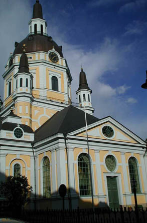
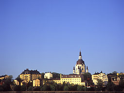

|
Ur Södermalm, åtta kulturhistoriska vandringar, Monica Eriksson, 1997
|

Katarina församling
|
|
Söder delades år 1654 i två församlingar, äldst var Maria i väster och nu tillkom Katarina i öster. Först
tänkte man rusta upp Sturekapellet till ny församlingskyrka, men Karl X Gustav ville att en ny kyrka
skulle byggas. Grunden lades till en stor och ståtlig kyrka vars arkitekt var Jean de la Vallee. Kyrkan
fick sitt namn efter kungens mor Katarina av Pfalz, Karl IX:s dotter.
Sturemonumentet står alldeles sydost om kyrkan, en fyra meter hög sten av granit, prydd
med en stor bronsmedaljong. Monumentet är ritat av Agi Lindegren och avtäcktes 22 november
1904, som ett minnesmärke över Sten Sture d.y. Efter Stockholms blodbad i november 1520
grävdes hans och hans lille sons kvarlevor upp (de låg begravna i Svartbrödraklostret) och
fördes enligt kung Kristian II:s önskemål ut till Södermalm för att brännas tillsammans med
liken efter dem som avrättats på Stortorget.
På den plats där bålet brann lät Johan III i slutet av 1580-talet uppföra Sturekapellet, en enkel
stenbyggnad som en tid användes som Söders församlingskyrka.
Katarina kyrka är orimligt stor med tanke på Söders inte särskilt talrika
befolkning. Anledningen till detta var att kungen hade stora planer för Söder. Här tänkte han
bygga ett kungligt slott och andra offentliga byggnader. Men kungen dog redan 1660, och av de
planerade byggnaderna blev endast Katarina kyrka uppförd.
|
Kyrkbygget påbörjades 1656, och Sturekapellet revs. Namnet Sture finns kvar i kvartersnamn i
trakten. Kyrkans eget kvarter heter Sturen mindre. 1690 var kyrkan färdigbyggd, men den användes
innan den var klar, bl.a. lästes häxböner här under häxprocessernas år. Den äldsta Katarina kyrka såg
inte ut riktigt så som den kyrka vi har varit vana att se. Den hade en lägre kupol och ett torn med hög
spira. Och kyrkan var röd, med listverk i grått.
Inom kort drabbades Katarina kyrka av en katastrof. Natten till 1 maj 1723 kom elden lös i en kvarn i
närheten och spred sig med en rasande fart. Katarina kyrka och bebyggelsen däromkring skadades
svårt. Kyrkans torn och kupol störtade och all inredning förstördes. Vid detta tillfälle brann också 500
trähus på centrala Södermalm.
|
Omedelbart påbörjades återuppbyggnaden, och redan i november 1724 kunde kyrkan
återinvigas. Göran Josuae Adelcrantz ledde arbetet och ritade det nya tornet och den magnifika
kupolen. Den nya kyrkan blev betydligt högre än den gamla och var helt klar 1744. Nu hade
Katarina fått sitt nuvarande utseende, men fortfarande var kyrkan röd. 1784 fick Katarina den gula
färg som den har haft sedan dess.
Natten mellan 16 och 17 maj 1990 brann Katarina kyrka för andra gången. Adelcrantz' kupol blev
övertänd och störtade in och förstörde kyrkans hela inredning. Denna gång behövde man inte riskera
att 500 hus skulle utplånas samtidigt, eftersom brandkåren finns i samma kvarter. Återuppbyggnaden
gick snabbt och Katarina kyrka har fått tillbaka sin förnäma kupol.
|
|

Om församlingsdelningen 1654
|
|
|